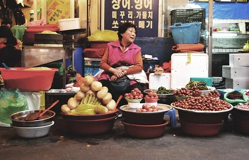
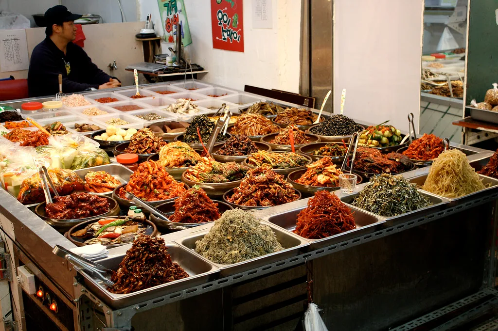

정부, 추석 민생안정대책…성수품 18.3만톤 역대 최대·명절자금 43.4조
정부가 지난 1일 국무회의에서 '추석 민생안정대책'을 확정했다. 추석을 앞두고 장바구니 물가 부담을 낮추기 위해 주요 성수품 공급을 평소보다 크게 늘리고, 농축수산물 할인에 역대 최대 규모의 예산을 투입하는 것이 핵심이다. 소상공인과 중소기업에는 명절자금을 대거 공급해 자금난을 덜어주기로 했다. 올해는 8월 소비자물가 상승률이 3.1%까지 오르고 쌀값이 강세를 보이는 등 먹거리 물가 부담이 커진 상황이어서, 정부는 예년보다 대책의 규모를 키웠다.
먼저 성수품 공급이 확대된다. 정부는 추석 3주 전부터 배추·무·사과·배·소고기·돼지고기·계란 등 성수품 18만3000t을 시장에 풀기로 했다. 이는 평소의 1.6배에 해당하는 물량으로, 관련 통계를 집계한 이래 가장 많다. 특히 농산물 공급량은 평시의 두 배를 훌쩍 넘는 수준으로 늘리고, 폭염·호우 피해로 값이 뛴 사과와 배는 평소의 세 배 이상을 공급한다.

할인 지원도 강화된다. 정부는 국산 농축수산물을 대상으로 추석 기준 역대 최대 예산을 투입해 최대 40~50% 할인을 지원한다. 행사 기간에는 1인당 할인 한도를 적용하지 않아 소비자가 필요한 만큼 혜택을 받을 수 있도록 했다. 전통시장에서 쓸 수 있는 온누리상품권은 할인 판매 한도를 늘리고, 대형마트와 온라인몰에서도 정부 할인 행사가 동시에 진행된다. 수산물의 경우 정부가 비축해 둔 명태·오징어·고등어 등을 시장에 풀어 가격을 누른다.
먹거리 물가가 대책의 배경이다. 통계청에 따르면 8월 소비자물가는 1년 전보다 3.1% 올랐고, 산지 쌀값은 20㎏에 5만6000원대까지 상승해 관련 통계 작성 이후 가장 높은 수준을 기록했다. 지난해 재배면적 감소와 작황 부진에 더해 올여름 기록적인 폭염과 잦은 호우로 농작물 피해가 겹친 결과다. 신곡이 본격 출하되기 전까지는 채소와 과일 가격의 강세가 이어질 수 있다는 관측이 나온다.

소상공인·서민 지원도 담겼다. 정부는 소상공인과 중소기업에 명절자금 43조4000억 원을 공급하고, 추석 전후로 만기가 돌아오는 대출·보증 62조4000억 원의 상환을 1년 미뤄주기로 했다. 저소득층과 취약계층, 청년을 위한 정책서민금융도 전년보다 대폭 확대한다. 부가가치세 환급금은 3일에 앞당겨 지급하고, 공공기관이 발주한 공사·물품 대금도 추석 전에 미리 지급해 명절 자금이 원활히 돌도록 했다.
취약계층을 위한 별도 지원도 마련됐다. 정부는 저소득층과 사회복지시설에 명절 위문품과 난방·생활비를 지원하고, 임금 체불이 우려되는 사업장을 집중 점검해 근로자들이 명절 전에 밀린 돈을 받을 수 있도록 하기로 했다. 귀성객이 몰리는 고속도로 통행료 감면과 대중교통 증편 등 이동 편의 대책도 함께 시행된다.
정부는 대책 시행 기간 동안 물가관계장관회의를 열어 성수품 수급과 가격을 매주 점검할 방침이다. 다만 이런 대책은 명절 성수기의 수요 급증을 완화하는 데 초점이 맞춰져 있어, 재배면적 감소와 기후 변화로 인한 구조적인 공급 부족 문제까지 해결하기는 어렵다는 지적도 나온다. 결국 올가을 신곡 작황과 정부 비축 물량 운용이 하반기 먹거리 물가의 향방을 가를 전망이다.